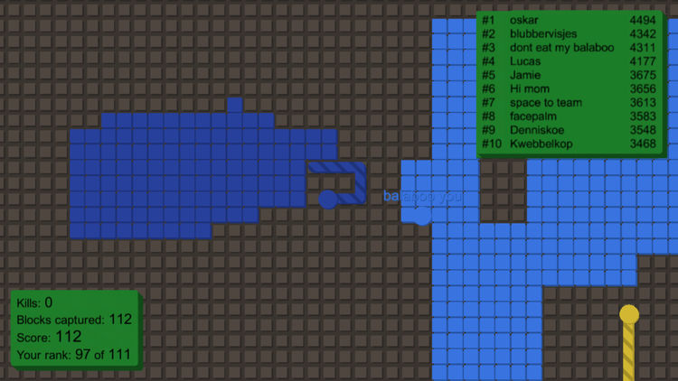
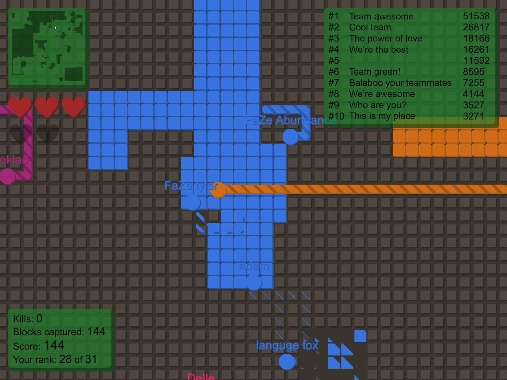
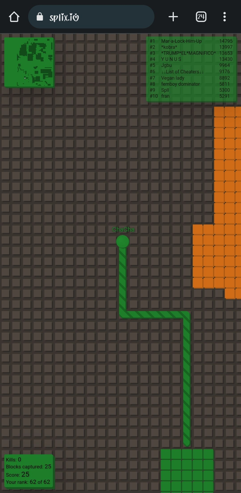

Splix.io is one of those deceptively simple browser games that hooks you within the first minute. You control a colored line on a grid, venture out from your safe territory, and try to encircle new blocks. Sounds easy? It is—until you realize every other player on the server is trying to do the same thing, and your trailing line is completely vulnerable while you're away from safety.
I've spent countless hours on this game, and what keeps me coming back is the risk-reward tension. Every time you leave your territory, you're gambling. One wrong turn and a rival clips your trail, wiping out everything you've built. That constant push-and-pull between playing safe and going for the big capture is what makes Splix.io addictive.
🎯 How Splix.io Works

The Core Loop
Splix.io runs on a simple premise: you start with a small patch of colored blocks on a shared grid. Your goal is to expand that territory by venturing into unclaimed land, drawing a trail around it, and connecting back to your safe zone. Once you reconnect, everything inside your trail becomes yours.
The catch? While you're outside your territory, your trailing line is exposed. If any opponent touches your trail, you're eliminated and lose all territory that wasn't yet connected. This creates a constant tension between making big captures (which require longer exposed trails) and playing conservatively.
Scoring System
Your score reflects total blocks captured. The leaderboard shows the top 10 players by territory size. Climbing the leaderboard requires both aggressive expansion and smart survival—growing fast means nothing if you keep getting eliminated before connecting big loops.
Game Modes
Splix.io offers both free-for-all and team modes. In team mode, you share territory with teammates and work together to dominate the map. Free-for-all is every player for themselves—a chaotic battle of wits where trust doesn't exist and anyone can be your undoing.
🎮 Controls & Setup

Movement Controls
Movement uses either WASD or arrow keys. Your character moves continuously in the direction you press—there's no stopping. This means every directional change is a commitment, and planning your path before leaving safety is crucial.
Entering Your Name
Before joining, you enter a display name that shows up on the leaderboard and above your character on the grid. Choose something memorable—it helps when tracking specific opponents during matches. You can also select between Normal and other game quality settings.
Reading the HUD
The bottom-left corner shows your personal stats: kills, blocks captured, current score, and your rank compared to total players. The top-right shows the top 10 leaderboard with scores. Keeping an eye on both helps you gauge whether to play aggressively (if you're behind) or defensively (if you're near the top).
🏰 Territory Capture Tactics

Small Loops for Safety
When starting out or when the map is crowded, stick to small loops. Grab 2-4 blocks at a time by barely extending past your border. These micro-captures keep your exposure time minimal—opponents have almost no window to clip your trail.
Small loops are especially effective near other players' territories where the grid is contested. You might not gain much per loop, but consistent small gains compound quickly without risking elimination.
Medium Loops for Growth
Once you've established a decent territory base, medium loops (8-16 blocks) become your primary growth tool. These require reading the map—check that no opponents are nearby with exposed trails that could intercept yours. The sweet spot is finding gaps between other players' territories where you can quickly extend and return.
Big Captures for Dominance
The big plays—encircling 30+ blocks—can single-handedly rocket you up the leaderboard. But they carry extreme risk. Your trail will be exposed for a long time, giving every opponent on the server a chance to eliminate you.
Only attempt big captures when: the surrounding area is clear of opponents, you've tracked where nearby players are moving, and you have a clear escape route back to your territory. If any of those conditions aren't met, scale back to medium loops.
Stealing from Opponents
You can capture blocks that were previously part of another player's territory. When you eliminate an opponent, their blocks become unclaimed and available for anyone. Additionally, you can slowly eat away at neighboring territories by making captures along shared borders. This is especially effective against players who are focused elsewhere.
🛡️ Defense & Survival
Watching Your Perimeter
Your territory's edges are where battles are won and lost. Opponents will try to capture blocks along your border, shrinking your land. Keep your eyes on your perimeter—if you see someone making a run along your edge, you can intercept their trail before they reconnect.
Intercepting Opponent Trails
The most satisfying plays in Splix.io come from cutting off an opponent's trail. When you see another player's line extending across the grid, position yourself to cross it. This eliminates them and potentially opens up their territory for your capture.
The key is patience. Don't chase trails recklessly—let opponents overextend themselves. Players going for big captures are the most vulnerable because their trails are long and predictable.
When You're Being Hunted
If an opponent is actively trying to clip your trail, head straight back to safety. Don't try to be clever with zigzag patterns—you'll just extend your exposure time. Get back to your territory, reconnect, and then reassess.
Using Other Players as Shields
In crowded servers, position yourself near other players' territories. This creates chaos that works in your favor—opponents targeting your trail might accidentally clip someone else instead. Dense areas with many territories actually provide more protection than open space because there are more trails to create confusion.
🧠 Advanced Strategies
Edge Expansion vs. Interior Growth
Always expand outward from the edges of your territory rather than growing inward. Interior captures reduce the open space you have to work with and don't increase your perimeter advantage. Edge expansion pushes your borders further onto the map, claiming territory that was previously available to everyone.
Baiting Opponents
Experienced players use a tactic where they make a short extension from their territory, then wait near the connection point. When an opponent tries to clip the short trail, they actually walk into a trap—you can quickly reconnect and then intercept their trail as they pass by. This requires timing but is devastating when executed correctly.
Map Awareness Priority
Split your attention between your immediate surroundings and the mini-map (if available). The mini-map gives you a bird's-eye view of all territories and trails, helping you identify safe corridors for expansion and vulnerable opponent trails. Players who only look at their character miss opportunities and dangers alike.
Timing Your Aggression
The best moments to go aggressive are right after a large opponent gets eliminated—their territory opens up and surviving players scramble to claim it. Also watch for opponents who are making reckless big captures; their trails will be exposed and you can pick them off while they're vulnerable.
❌ Common Mistakes to Avoid
Overextending Early
New players often try massive captures right from the start. This almost always ends in elimination. Build up gradually with small captures, establish a solid territory base, then work your way up to bigger plays.
Tunnel Vision
Focusing entirely on one area of the map while ignoring what's happening around you is a death sentence. Always scan for approaching opponent trails before committing to a capture path. The grid moves fast—what looked safe three seconds ago might have an opponent's trail cutting through it now.
Forgetting to Return
Some players get caught up in the thrill of expansion and keep going further from safety. Always know your route back before you leave your territory. If you can't see a clear path home, don't make the move.
Neglecting Your Borders
While chasing opponents across the map, you might not notice someone eating away at your territory. Check your borders periodically. Losing a few blocks to a border raider is minor, but letting someone systematically shrink your land while you're distracted can cost you significant score.
🏆 Pro Tips
Start small, grow methodically. The players who reach the top of the leaderboard didn't get there with one lucky big capture. They consistently made smart medium-sized captures while avoiding elimination over many minutes of gameplay.
Learn opponent patterns. Most players follow predictable movement patterns. After watching someone for 10-15 seconds, you can often predict their next move and position yourself to intercept their trail.
Use team mode to your advantage. In team games, coordinate with allies. One player can distract opponents while another makes big captures. A coordinated team will always beat scattered individuals.
Share to unlock customization. Splix.io rewards you with block customization options when you share the game. It's a simple way to personalize your territory's appearance and stand out on the grid.
❓ Frequently Asked Questions
What is Splix.io?
Splix.io is a free multiplayer browser game where players compete to capture the most territory on a shared grid. You draw paths around unclaimed blocks to capture them, but your trail is vulnerable while you're away from your safe zone.
How do I play Splix.io?
Navigate to splix.io in your browser, enter a name, and click Join. Use WASD or arrow keys to move. Leave your colored territory, draw a path around blocks you want to capture, and return to your territory to claim them. Avoid letting opponents touch your trail.
What happens when I die in Splix.io?
When an opponent touches your trail while you're outside your territory, you're eliminated. Your unconnected territory is lost, and you respawn with a small starting area. Your previously captured blocks remain on the map as unclaimed territory that anyone can take.
Is Splix.io free to play?
Yes, Splix.io is completely free. No account registration is required—just open the game in any modern browser and start playing. There are no in-app purchases or pay-to-win mechanics.
Can I play Splix.io on mobile?
Splix.io is primarily designed for desktop browsers with keyboard controls. Some mobile browsers may support it, but the experience is optimized for keyboard input. For the best experience, play on a computer.
How do I get a high score in Splix.io?
Focus on survival first, expansion second. Players who avoid elimination consistently outscore those who make aggressive but risky plays. Build steadily with medium captures, watch for opportunities to intercept opponent trails, and only attempt big captures when the surrounding area is clear.
📝 Related Games to Try
Enjoy territory capture mechanics? Check out Paper.io for similar grid-based territorial combat, or Agar.io for classic cell growth gameplay. If you prefer action, Diep.io offers tank combat with upgrade progression.
📝 Conclusion
Splix.io is the perfect example of how simple mechanics can create endlessly engaging gameplay. The tension between expansion and survival keeps every match exciting. Master the art of reading the grid, timing your captures, and intercepting opponent trails, and you'll climb the leaderboard in no time.
Head to the grid and start claiming your territory!
Last updated: June 13, 2026
Written by the iogameguide.com team